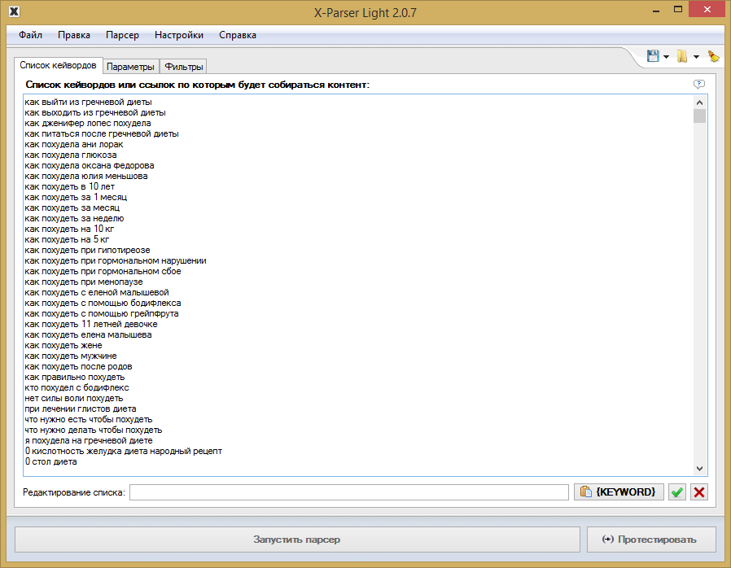
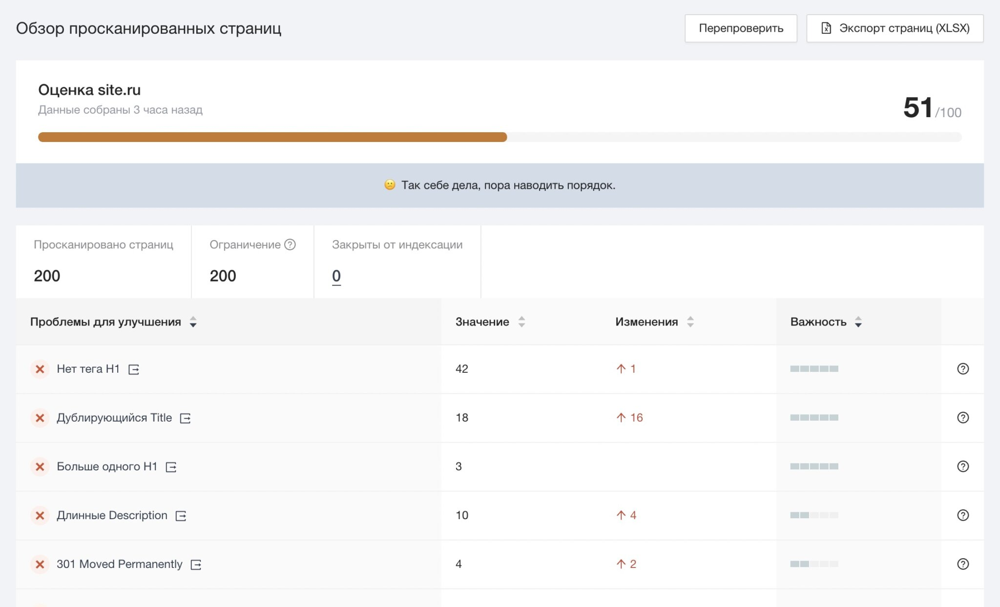
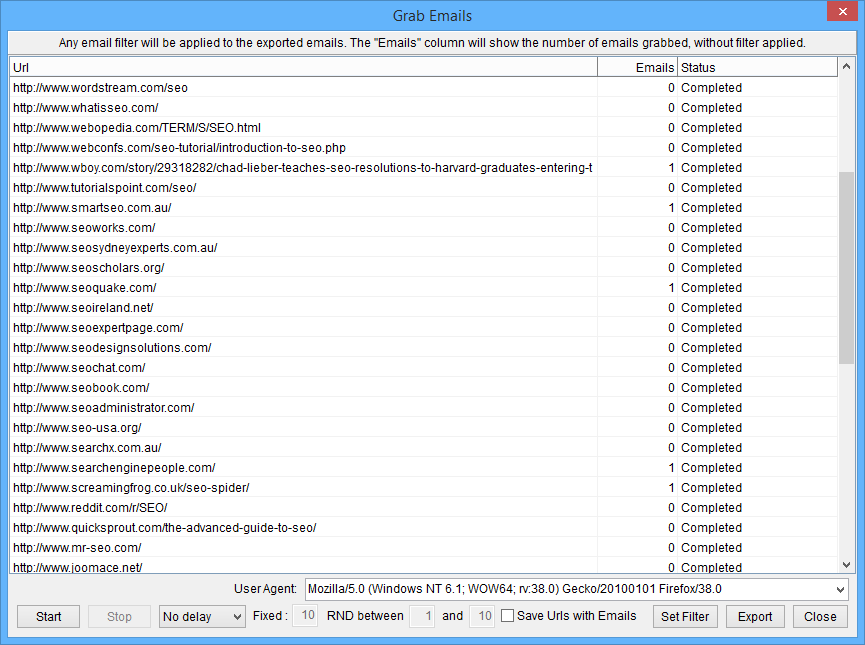

Подборка парсеров для сбора данных
Парсинг помогает быстро собрать, обработать и проанализировать большие объёмы информации на различных
сайтах. Это полезно при изучении целевой аудитории, анализе конкурентов, исследовании рынка и не только.
Однако важно выбрать подходящий инструмент с учётом конкретной задачи.
Сделали подборку парсеров для сбора данных с сайтов и разобрались, для каких целей они подходят.
Для сбора контента
Под сбором контента подразумевают парсинг новостей и заголовков, описаний к товарам, комментариев, любых
публикаций по ключевым словам, видеоматериалов, картинок, постов в соцсетях.
При парсинге контента важно учитывать один важный нюанс , который касается последующего использования
данных. Если вы собираете информацию, например, для отслеживания ситуации в нише или поиска актуальных
идей, то вы не совершаете ничего противозаконного. Если же планируете публикацию собранных данных, то не
забывайте об авторском праве. При размещении спарсенного материала в исходном виде обязательно
указывайте источник и/или запрашивайте согласие автора на публикацию.

Пример настройки парсинга по ключевым словам
Примеры парсеров для сбора контента:
X-Parser Light. Собирает тематический контент по списку ключевых слов или ссылок. Кроме
текстовых данных парсит видео и изображения. Поддерживает любые поисковые системы и практически
любой
язык. Работает в формате десктопного приложения. Стоимость — 4 100 ₽ единоразово (периодически
бывают
скидки).
Catalogloader. Умеет парсить информацию с сайтов интернет-магазинов — описания товаров, фото,
характеристики, артикулы и пр. Можно самостоятельно настраивать критерии сбора. Весомый плюс —
парсер
работает в облаке, без скачивания на ПК. Есть бесплатная версия. Платные тарифы начинаются от 5 400
₽/мес.
XMLDATAFEED. Сервис позиционирует себя как инструмент для парсинга любой информации, которую
можно
собрать законным способом. Например, можно искать товарные описания, тексты, фото и изображения,
ассортимент и характеристики. Особенность сервиса — в отсутствии готовых решений. Под каждый запрос
команда разработчиков создаёт уникальный парсер для нужной задачи. Стоимость — индивидуально.
Диггернаут. Облачный сервис, предлагающий платные и бесплатные парсеры. Стоимость платных
решений
— от
700 ₽/мес. С помощью специальных инструментов пользователь может создать собственный парсер (диггер)
под
нужный запрос. Можно заказать разработку сложных решений.
Примеры парсеров для сбора контента:
Marketparser. Сервис мониторит цены в интернет-магазинах и на маркетплейсах. Достаточно загрузить
список товаров, и в течение 3–20 минут по ним будет составлен актуальный отчёт. Можно использовать
функцию автоматического ценообразования — на основе собранных данных сервис определит оптимальную
стоимость товаров. Стоимость парсера зависит от количества проверок и начинается от 4 500 ₽/мес.
ALL RIVAL. Этот парсер собирает цены конкурентов по указанным ссылкам. Из преимуществ — есть
бесплатное автосопоставление результатов. Сервис доступен на бесплатном тарифе с ограничением до двух
сайтов. Стоимость платного тарифа начинается от 5 099 ₽/мес.
Priceva. С помощью этого сервиса можно собирать цены конкурентов. Есть функция автоматической
переоценки товаров пользователя. Все собранные цены конвертируются в валюту аккаунта на любом тарифе.
Стоимость от 7 000 ₽/мес. Есть бесплатный тариф с мониторингом до десяти сайтов.
uXprice. Это SaaS-решение. Программа собирает цены из рекламных объявлений, по ссылкам на
конкретные товары и на указанных сайтах. Есть возможность сравнительного анализа цен конкурентов. Можно
использовать функции конкурентного ценообразования для определения оптимальной стоимости своих товаров.
Сервис умеет мониторить цены конкурентов в 36 странах. Стоимость парсера — от $99/мес. Есть бесплатная
версия на 7 дней.
Для парсинга SEO-параметров
Сбор SEO-данных полезен при внутренней, технической и внешней оптимизации. Парсеры помогают быстро
осуществить комплексный анализ ресурса. Некоторые инструменты имеют узкий функционал, другие умеют
собирать самые разные параметры.
SEO-парсеры можно применять как для анализа собственного ресурса, так и для отслеживания конкурентов.

Пример отчёта парсинга SEO-данных
Примеры парсеров для сбора SEO-данных:
Screaming Frog SEO Spider. Многофункциональный парсер-сканер, который умеет собирать огромное
количество разных данных — метатеги, XML-карты, битые ссылки, атрибуты Alt у картинок, дублированный
контент, сведения о технической оптимизации и многое другое. Бесплатно можно проверить до 500
URL-адресов. Платная версия — $209/год. SEO Spider работает в формате приложения для ПК.
PR-CY. Сервис позволяет в режиме онлайн выполнить SEO-аудит сайта. Можно искать позиции ресурса в
поиске, мета-теги, коды ответов сервера, заголовки, внешние исходящие ссылки, проблемные страницы.
Стоимость — от 990 ₽/месяц. Есть бесплатный доступ на 7 дней.
Xenu’s Link Sleuth.Бесплатный парсер для поиска неработающих ссылок. Список собранных URL можно
сортировать по любым критериям. Отчёт можно запросить в любое время. Работает как декстопное приложение.
A-Parser.Многофункциональный инструмент для профессионального использования. Умеет парсить любые
данные в неограниченном объёме: ссылки, анкоры, сниппеты, позиции в поиске, рекламные блоки, ключевые
слова и многое другое. Всего в сервисе доступно 90+ разных парсеров. Стоимость от $179 за пожизненную
лицензию. При необходимости здесь можно заказать индивидуальную разработку парсеров по нужным
параметрам.
Для сбора контактных данных
Больше всего сомнений в законности парсинга возникает при сборе контактных данных — телефонов,
email-адресов, контактных лиц. Здесь важно понимать разницу между персональными и общедоступными
данными. Кроме того, имеет значение способ использования собранной информации.
Например, собрать базу контактов потенциальных партнёров или поставщиков — это законно. А вот
автоматический сбор email-адресов для рассылки нарушает закон о персональных данных. А за массовую
рассылку по адресам, собранным из открытых источников, можно улететь в спам.

Настройка парсинга email-адресов
Примеры парсеров для сбора контактных данных:
ZoomInfo. Собирает контактные данные B2B — номера телефонов, email-адреса, ссылки на
профили в соцсетях. Дополнительно можно парсить и другие важные данные о клиентах и партнёрах —
веб-упоминания, должностные обязанности и иную информацию из публичного доступа. Стоимость сервиса — по
запросу. Есть бесплатная пробная версия.
Hunter. Парсер для поиска людей, работающих в определённой компании, с их именем и
адресом электронной почты. Дополнительное преимущество — бесплатный сервис для рассылки «холодных»
писем. Стоимость парсера — от $49/мес. Есть бесплатный тариф с ограничениями.
Scrapebox Email Scraper. Собирает email-адреса в разных поисковых системах, на разных
сайтах и из локальных файлов. При экспорте можно сохранять URL-адрес, с которого получен email.
Стоимость приложения для парсинга — $97 за лицензию (цена без скидки $197).
Вывод:
Выбирая подходящий парсер, учитывайте ваши задачи и периодичность использования. Часто за один раз можно
собрать определённый тип данных — для этого хватит бесплатного инструмента или триал-версии платного
сервиса. Для регулярного сбора данных выбирайте парсер, который настроен на работу с нужным вам типом
данных. Если планируете собирать большое количество разной информации и в приоритете гибкие настройки
парсинга, то, вероятно, стоит заказать индивидуальное решение.